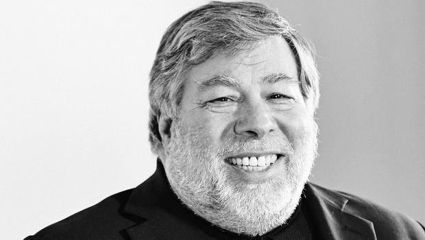

|

|

|

|
|---|
Steve Jobs
Steve Wozniak
Stephen (or Stephan) Gary "Steve" Wozniak[1]:18 (born August 11, 1950), nicknamed "Woz", is an American inventor, electronics engineer, programmer, and technology entrepreneur who co-founded Apple Inc. He is known as a pioneer of the personal computer revolution of the 1970s and 1980s, along with Apple co-founder Steve Jobs. Wozniak single-handedly developed the 1976 Apple I, which was the computer that launched Apple. He primarily designed the 1977 Apple II, while Jobs oversaw the development of its unusual case and Rod Holt developed the unique power supply.
In 1969, Wozniak returned to the Bay Area after being expelled from University of Colorado Boulder in his first year for hacking into the institution's computer system.[11][12] He later re-enrolled at De Anza College and transferred to University of California, Berkeley in 1971. Before focusing his attention on Apple, he was employed at Hewlett-Packard where he designed calculators. It was during this time that he befriended Steve Jobs. Steve Wozniak was introduced to Jobs by friend Bill Fernandez, who attended Homestead High School with Jobs in 1971. Jobs and Wozniak became friends when Jobs worked for the summer at Hewlett-Packard (HP), where Wozniak too was employed, working on a mainframe computer.[14] This was recounted by Wozniak in a 2007 interview with ABC News, of how and when he first met Steve Jobs:
"We first met in 1971 during my college years, while he was in high school. A friend said, 'you should meet Steve Jobs, because he likes electronics and he also plays pranks.' So he introduced us."
In 1973, Jobs was working for arcade game company Atari, Inc. in Los Gatos, California.[16] He was assigned to create a circuit board for the arcade video game Breakout. According to Atari co-founder Nolan Bushnell, Atari offered $100 for each chip that was eliminated in the machine. Jobs had little knowledge of circuit board design and made a deal with Wozniak to split the fee evenly between them if Wozniak could minimize the number of chips. Wozniak reduced the number of chips by 50, by using RAM for the brick representation. Too complex to be fully comprehended at the time, the fact that this prototype also had no scoring or coin mechanisms meant Woz's prototype could not be used. Jobs was paid the full bonus regardless. Jobs told Wozniak that Atari gave them only $700 and that Wozniak's share was thus $350.[17] Wozniak did not learn about the actual $5,000 bonus until ten years later, but said that if Jobs had told him about it and had said he needed the money, Wozniak would have given it to him.